CanvasRoot canvas with transparent or custom backgrounds and padding.
71 reusable pieces for technical diagrams, charts, dashboards, and documentation figures.
Explore a live example, then make it your own.
Double-click text to edit. Enter saves. Escape cancels.
Browse every component with a focused runnable example. Copy the source or open it in the playground to edit and render both themes.
Scene structure, responsive layout, and framed surfaces.
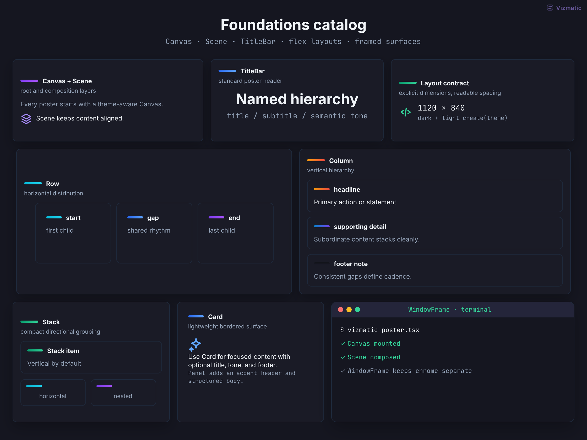
CanvasRoot canvas with transparent or custom backgrounds and padding.
ScenePrimary vertical scene layout with optional title and subtitle.
TitleBarStandalone heading and supporting copy.
RowHorizontal flex layout with stable gaps and alignment.
ColumnVertical flex layout for stacked composition.
StackCompact vertical grouping for related content.
PanelTitled container for grouped visual content.
CardGeneral-purpose surface with tone, padding, and shadow.
WindowFrameApplication or terminal window framing.
Labels, cards, code, comparisons, and reusable information blocks.
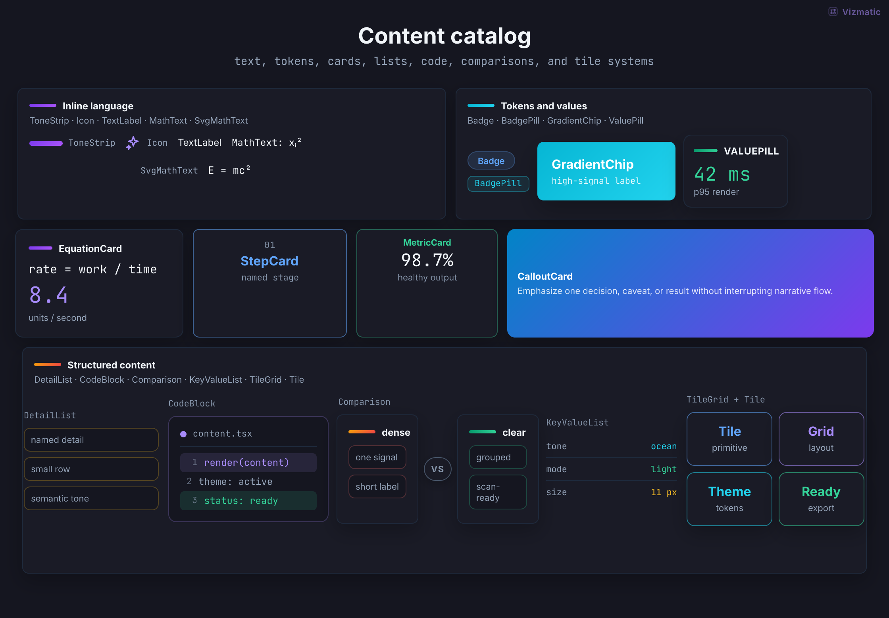
ToneStripShort semantic color accent.
IconTheme-aware technical icon set.
TextLabelWrapping-safe SVG or flex label.
MathTextMath-aware text formatting for React content.
SvgMathTextPositioned math overlay aligned with custom SVG geometry.
BadgeCompact semantic SVG label.
BadgePillInline status, category, or metadata label.
GradientChipEmphasized label with tone gradient.
ValuePillSmall label-value pair.
EquationCardFormula, result, and supporting detail.
StepCardNumbered or staged process card.
MetricCardKPI value with label and context.
CalloutCardFocused takeaway, warning, or recommendation.
DetailListCompact list of supporting facts.
CodeBlockCode or command excerpt with optional line numbers.
ComparisonSide-by-side alternatives or before/after states.
KeyValueListAligned technical metadata rows.
TileSingle labeled unit for feature or system maps.
TileGridDense grid of related labeled units.
WatermarkFrame metadata for text, image, or custom branding.
Processes, timelines, status, and progress.
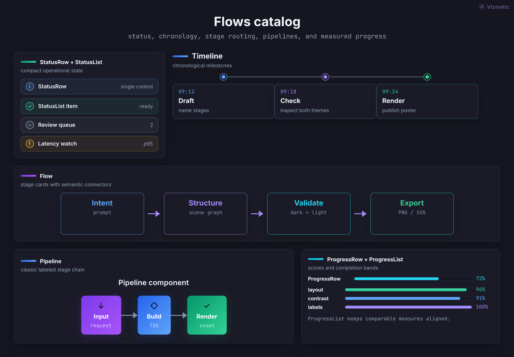
StatusRowSingle operational state with detail.
StatusListGrouped checks, warnings, and pending work.
TimelineOrdered events in horizontal or vertical form.
FlowConnected horizontal or vertical stages.
PipelineCompact process pipeline with shared title.
ProgressRowLabeled progress bar and value.
ProgressListComparable progress across several measures.
Networks, system architecture, directed graphs, and hierarchies.
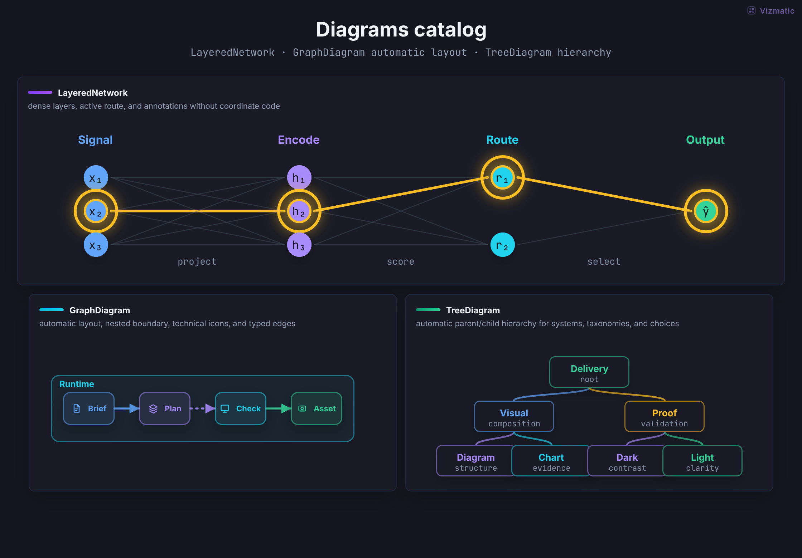
LayeredNetworkLayered neural network or staged DAG.
GraphDiagramAuto-laid architecture graph with nested groups, icons, and semantic edges.
TreeDiagramAuto-laid hierarchy, taxonomy, or decision tree.
Time-ordered interactions, lifelines, activations, notes, and control fragments.
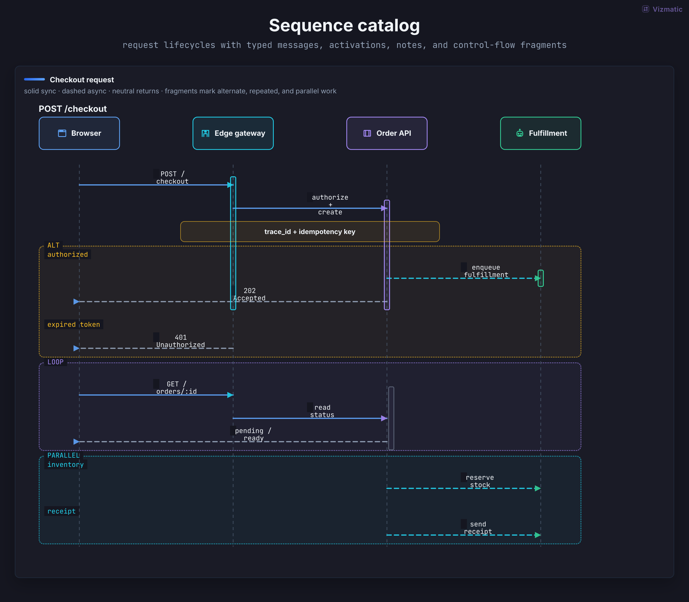
SequenceDiagramTyped participants, messages, notes, activations, and alt, loop, or parallel fragments.
Typed lineage across sources, transforms, stores, and sinks.
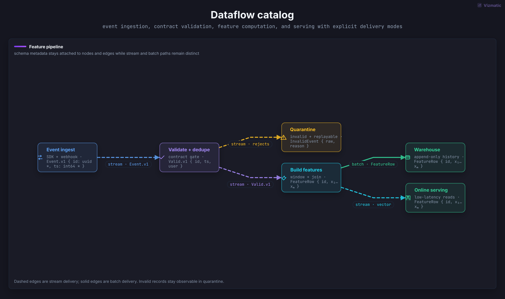
DataflowDiagramSchema-aware batch and streaming lineage compiled into a stable directed graph.
Infrastructure boundaries, workloads, ports, protocols, and trust direction.
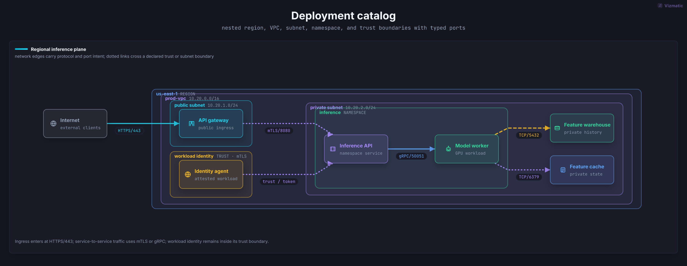
DeploymentDiagramNested region, network, and runtime boundaries with typed network connections.
Transformer blocks, tensor shapes, repeated layers, and distributed routes.
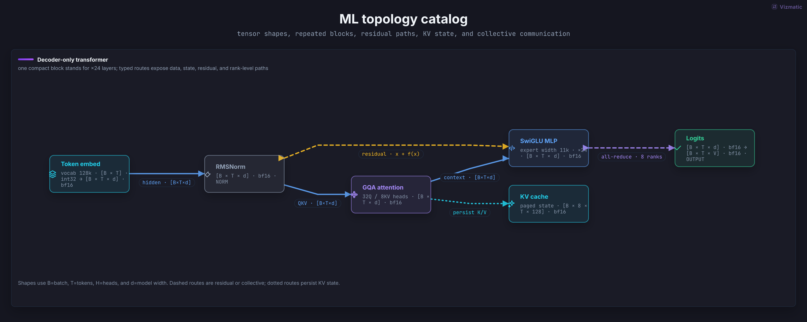
TransformerTopologyTransformer computation topology with tensor metadata and collective routes.
Tables, grids, matrices, and compact distributions.
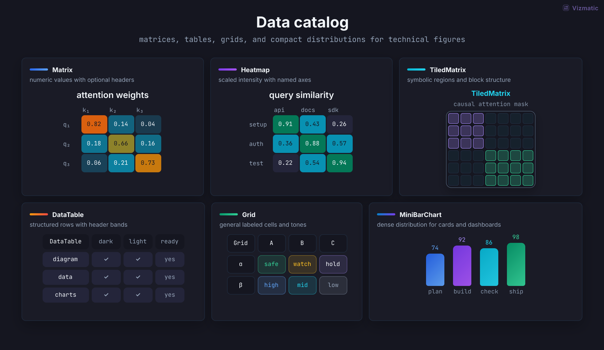
MatrixNumeric or symbolic matrix with headers.
HeatmapColor-scaled matrix for intensity and correlation.
TiledMatrixMatrix with named regions and boundaries.
DataTableStructured rows and columns with headers.
GridGeneral labeled cell grid.
MiniBarChartCompact categorical bars for dense layouts.
Common comparisons, trends, distributions, and analytical plots.
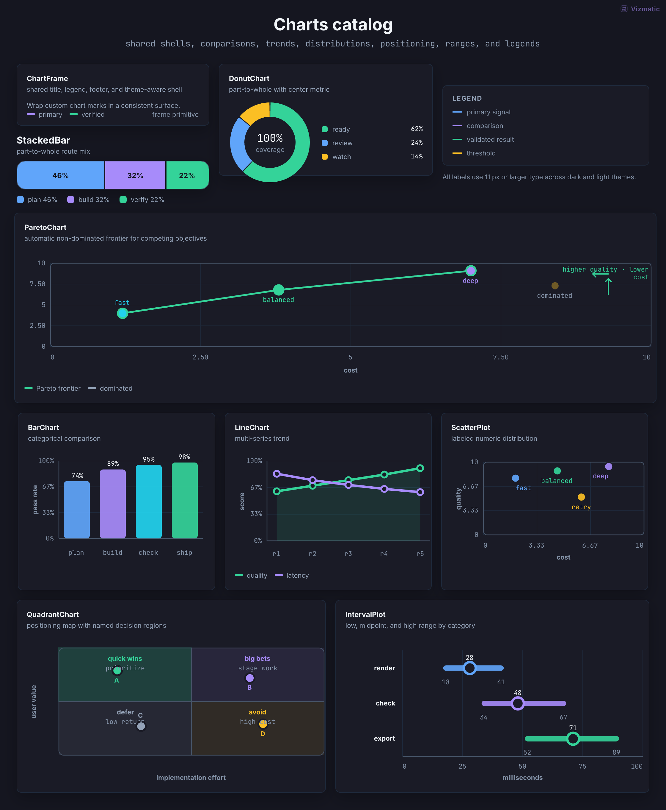
ChartFrameShared chart title, subtitle, legend, and footer.
DonutChartPart-to-whole composition with center label.
StackedBarPart-to-whole values along one dimension.
BarChartCategorical comparison with labels and values.
LineChartOne or more trends across an ordered axis.
ScatterPlotPoint distribution across two numeric axes.
ParetoChartAutomatic non-dominated frontier across competing numeric objectives.
QuadrantChartNumeric decision map split by configurable policy thresholds.
IntervalPlotLow, midpoint, and high ranges by category.
LegendReusable color key for charts and diagrams.
Low-level SVG geometry for custom technical figures.
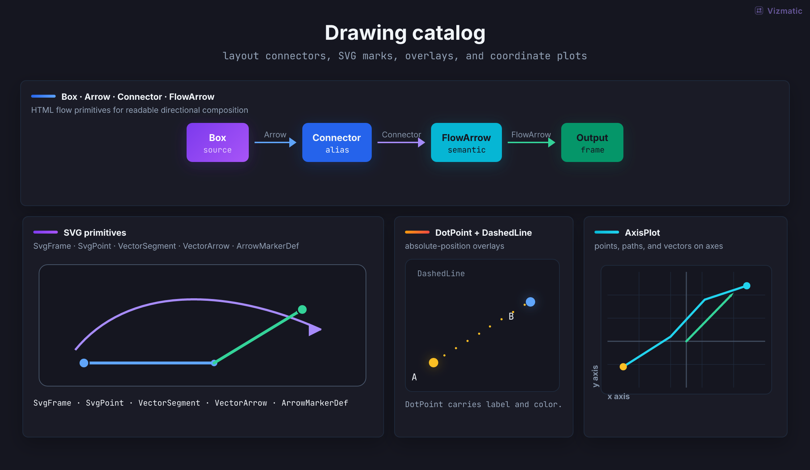
BoxRounded SVG box with label and tone.
ArrowStraight labeled SVG arrow.
ArrowMarkerDefReusable SVG arrowhead definition.
FlowArrowStraight directional connector with label and tone.
ConnectorAlias for flow connectors in diagram code.
VectorArrowVector with optional endpoints and arrowhead.
VectorSegmentLine segment for geometric constructions.
SvgFrameSVG plotting frame with border and fill.
SvgPointLabeled point for SVG figures.
DotPointPoint marker with optional text label.
DashedLineDotted or dashed SVG guide line.
AxisPlotCoordinate plane for points, vectors, and paths.
No components match this search.